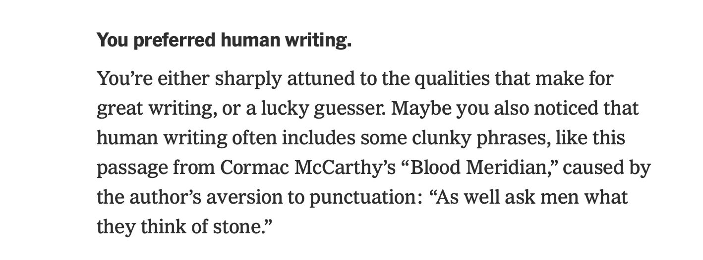

Thank God I Can Still Sense the Human!
March 9, 2026 · Reha Discioglu
The New York Times published a test to evaluate if you prefer the human or the AI writer. Over the last two years, I believe I developed an immunity to AI writing, but I was still scared to take the test.
My result was that I still have a sense for human content, but 54% of quiz takers preferred AI.

I think we, people who communicate with AI more than anybody daily, should do a similar test every 3–4 weeks to see if we are still able to identify human content.
Link to the test if you want to try yourself: NYT AI Writing Quiz